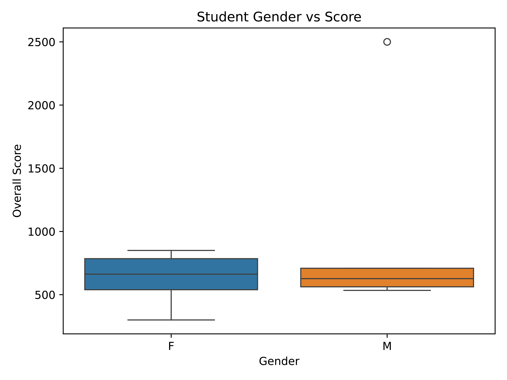
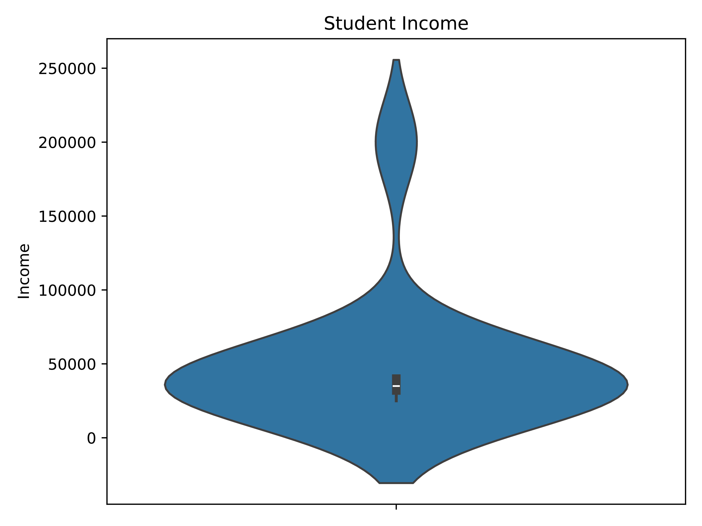
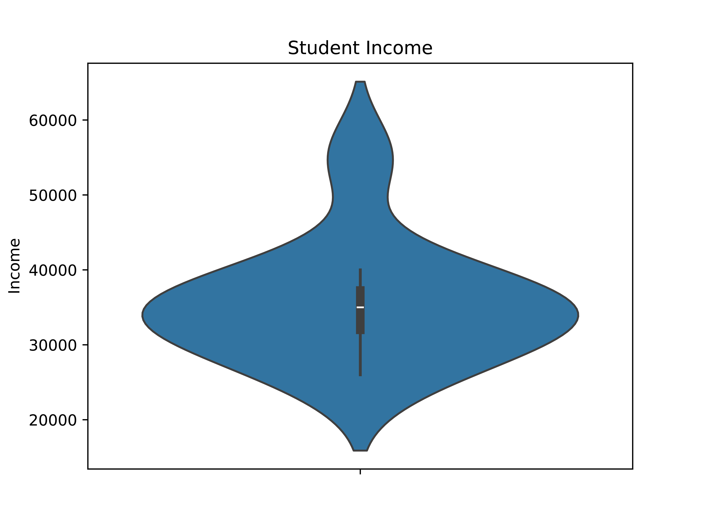
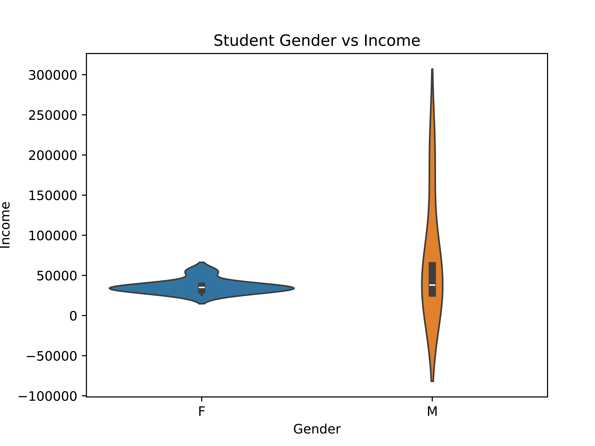
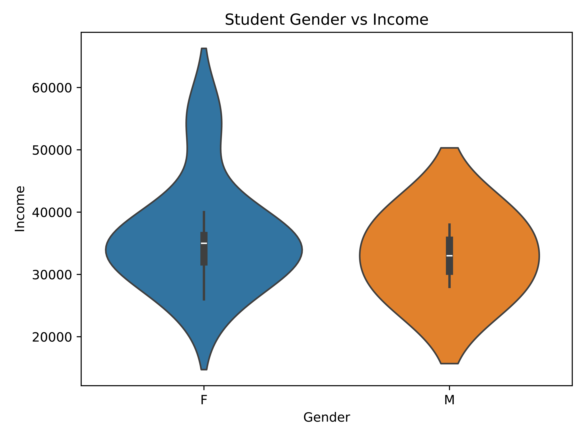

Seaborn | pandas






Project Description
- Completed as a part of my coursework for CS:2420: Analyzing Data for Informatics
- Implemented in a Jupyter Notebook: link here
- Based on pandas dataframes
- Which were created from a supplied csv file
- Visualizations created with Seaborn
What I Learned
- What to consider when utilizing a dataset with outliers
- How to distinguish between visualizations with and without outliers
- How to remove outliers if necessary